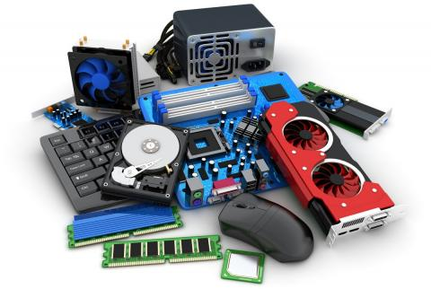
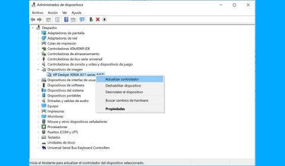
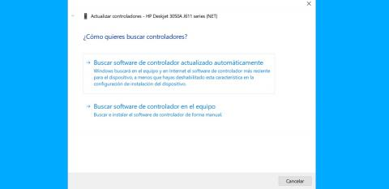
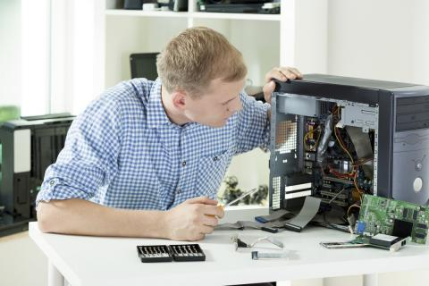
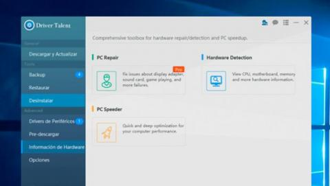
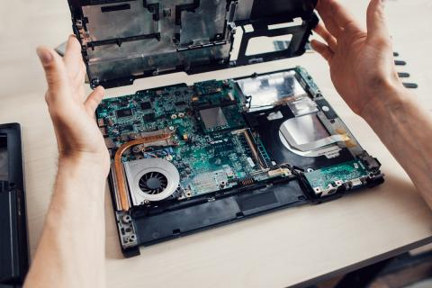
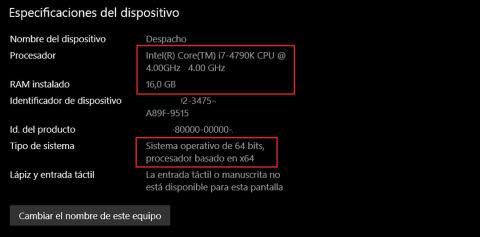
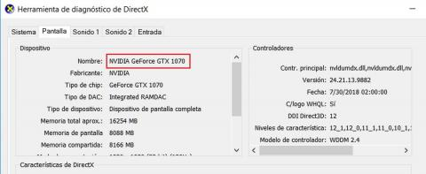

Instalación y configuración de Drivers y Software dependiendo de los requerimientos del usuario
La mayoría de los drivers críticos que controlan la CPU, la memoria, la tarjeta de red, la tarjeta gráfica, etc., ya están integrados en el sistema operativo. Pero suelen ser controladores genéricos que no ofrecen el máximo rendimiento. Por eso conviene instalar los drivers específicos que ofrece el fabricante. Vamos a ver cómo hacerlo.
Instalación a través de Windows
La forma más sencilla y cómoda de descargar e instalar drivers en tu PC, es a través de Windows. Como hemos comentado en ciertas componentes críticas que se actualizan una vez al mes, como la tarjeta gráfica, posiblemente no ofrecerá la última versión, o tardará un tiempo en hacerlo. Pero Microsoft testea los drivers para que no den problemas, así que obtendremos un buen rendimiento y podremos actualizar nuestro PC con seguridad.

Actualizar los drivers en las versiones modernas de Windows es muy sencillo. En el buscador del escritorio escribe Buscar actualizaciones y pulsa en la opción que sale con ese nombre. Se abrirá la ventana Windows Update. Pulsa en el botón Buscar actualizaciones, y actualizará todos los drivers críticos que no tengas actualizados.
10 cosas que siempre debes hacer después de comprar un PC nuevo
Con Windows Update solo se actualizan los drivers más críticos. Si hay un periférico o componente concreto que quieras actualizar, sigue estos pasos:
• Pulsa con el botón derecho del ratón sobre el Botón de Inicio de Windows, y elige la opción Administrador de Dispositivos. O usa el buscador de Windows para encontrarla.

• En pantalla verás todo el hardware de tu PC (si algún elemento falla, aparecerá una señal de peligro amarilla).
• Haz un doble clic en el elemento que quieres actualizar. Se desplegará una lista con el nombre del hardware. Pincha con el botón derecho y elige la opción Actualizar controlador (tal como podemos ver en la imagen anterior).
• En la ventana que se abre, selecciona Buscar software de control actualizado automáticamente:

Instalar drivers con ayuda de programas
Windows Update solo actualiza los drivers críticos del sistema. Para el resto utiliza drivers genéricos, que no extraen todo el potencial de cada marca o modelo en concreto. En un ordenador puede haber cerca de un centenar de componentes y periféricos que necesitan un driver, y no es una exageración. Actualizarlos todos manualmente por tu cuenta es un proceso lento y aburrido. Por suerte, existen programas que lo hacen por nosotros.

Estas utilidades realizan un chequeo de nuestro PC e identifican todo el hardware que usamos, además de los drivers que tenemos instalados. Si existe una versión más nueva de ese hardware, nos avisa e incluso la instala automáticamente. Estos son algunas de las aplicaciones para descargar e instalar drivers más utilizadas:
Driver Talent realiza un chequeo de tu equipo y te ofrece enlaces para que actualices los drivers anticuados. La versión gratuita es totalmente funcional pero no instala los nuevos drivers. Te ofrece el enlace para que los descargues tu. Si quieres hacerlo automáticamente, tienes que comprar la versión Pro.

Funciona realmente bien cuando tu PC no reconoce un hardware, y no sabes qué marca y modelo de periférico has conectado. Snappy Driver Installer funciona de manera similar a las anteriores pero ofrece un par de funcionalidades únicas bastante interesantes. Como el resto, realiza un chequeo de tu equipo, pero una vez que ha localizado los controladores que hay que actualizar, ofrece la opción de hacerlo en un solo paso, en lugar de driver a driver como en otras utlidades.

Instalar driver manualmente
Con los métodos anteriores solucionaremos la mayoría de los problemas con los drivers. Pero hay excepciones. Por ejemplo, tenemos un controlador especialmente rebelde que no se actualiza con Windows Update o las aplicaciones anteriores. O se trata de un periférico poco conocido, o muy nuevo, que no es reconocido por las herramientas anteriores. O es un componente que se actualiza muy a menudo, como ocurre con la tarjeta gráfica o la placa base, y es más rápido actualizarlo nosotros por nuestra cuenta.

Si vamos a actualizar los drivers manualmente, hay que distinguir dos tipos diferentes. Los que tienen instalador, es decir, pones en marcha un programa y automáticamente actualiza el driver, y los que no tienen instalador. Son solo ficheros de datos y tenemos que decirle a Windows que los use.
En ambos casos, lo primero que tenemos que saber es el hardware que tenemos en nuestro PC, incluyendo marca y modelo.
¿Qué hardware tengo?
Para descubrir qué componentes y periféricos tiene nuestro PC, podemos recurrir a los manuales o las especificaciones, pero no siempre tienen los datos, o no se corresponden con la realidad.
El propio Windows nos ofrece esta información. Pulsa con el botón derecho del ratón sobre el botón Inicio del escritorio, y elige Sistema. Después pulsa en Acerca de... Aquí verás el modelo y marca de procesador que tienes, la memoria, y la versión de Windows:

Si quieres ver los datos de la tarjeta gráfica y de sonido, introduce Ejecutar en el cajón de búsqueda de Windows. En esta aplicación, teclea dxdiag para abrir la herramienta de diagnóstico de DirectX, donde podrás ver los detalles sobre video y sonido de los componentes de tu ordenador. Toca en las solapas Pantalla y Sonido:

Estas son las componentes críticas que más hay que actualizar. Si quieres conocer otros datos importantes, como el modelo de placa base, tarjeta de red, impresora, etc., puedes utilizar una aplicación gratuita como Speccy.